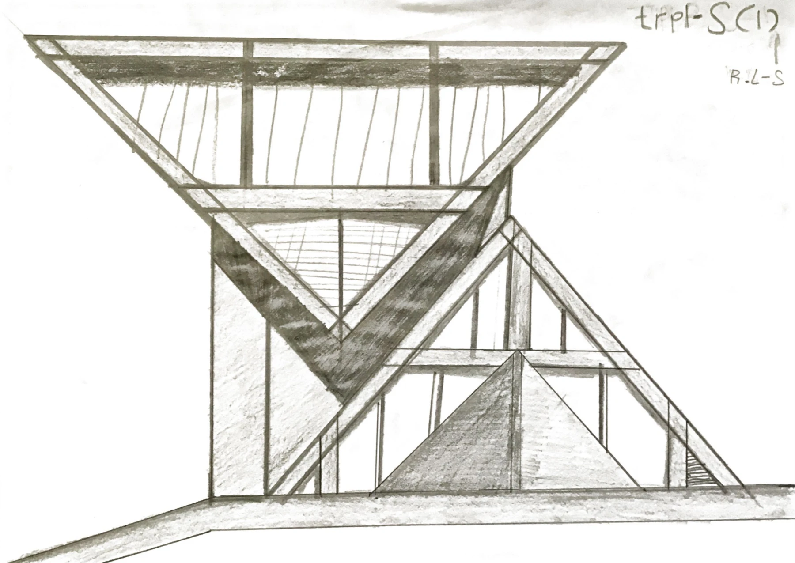
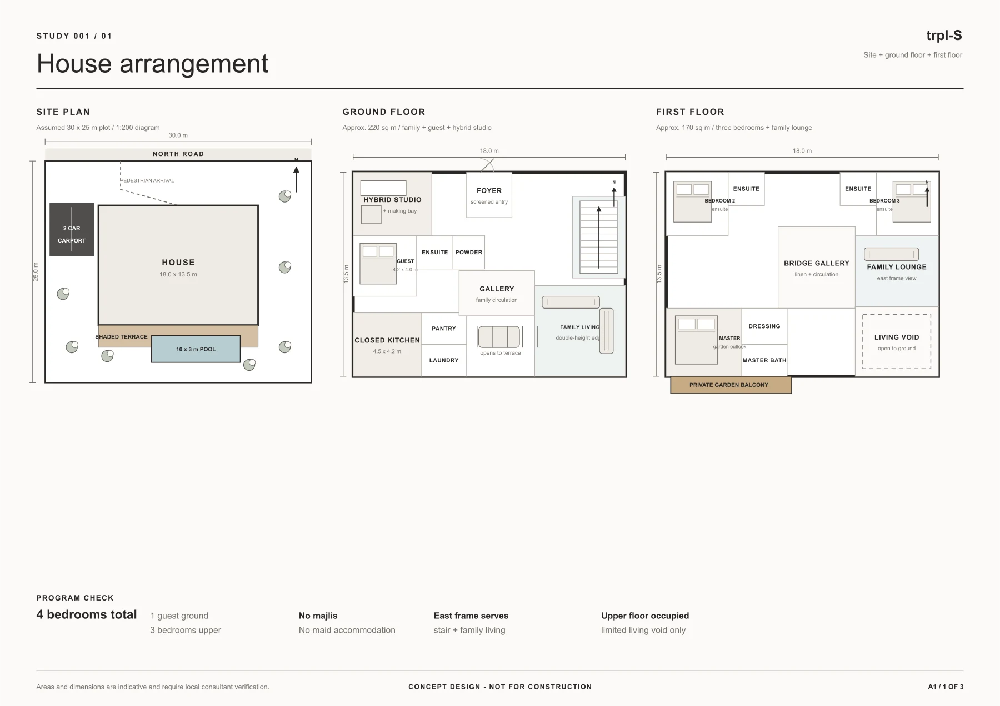
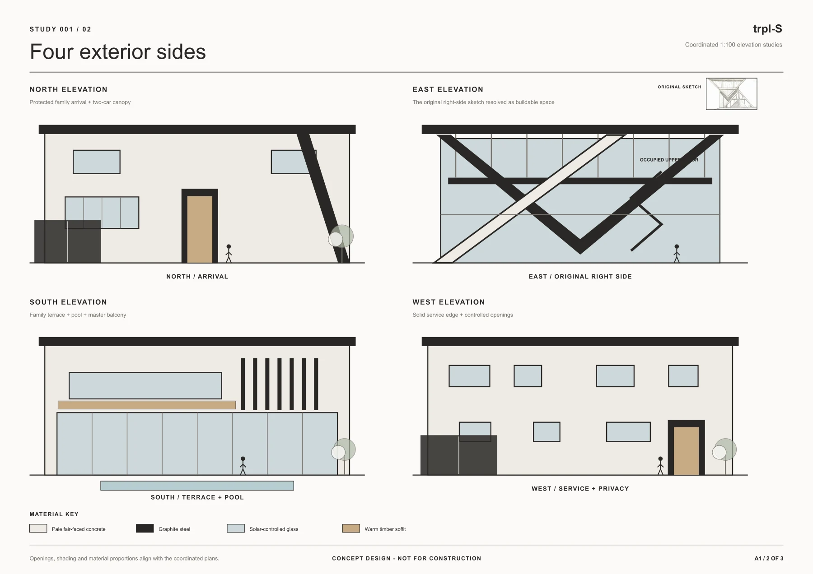
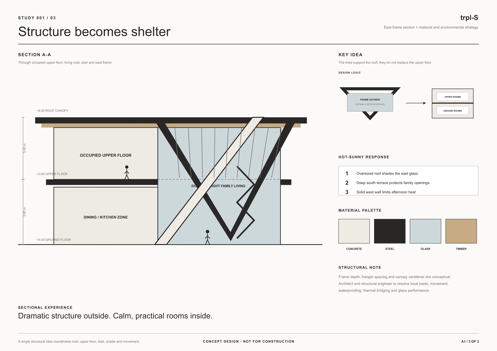
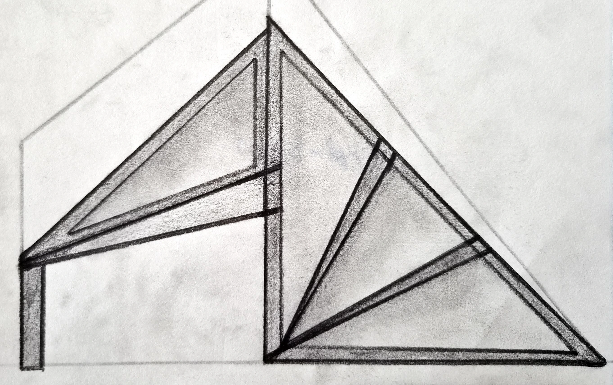
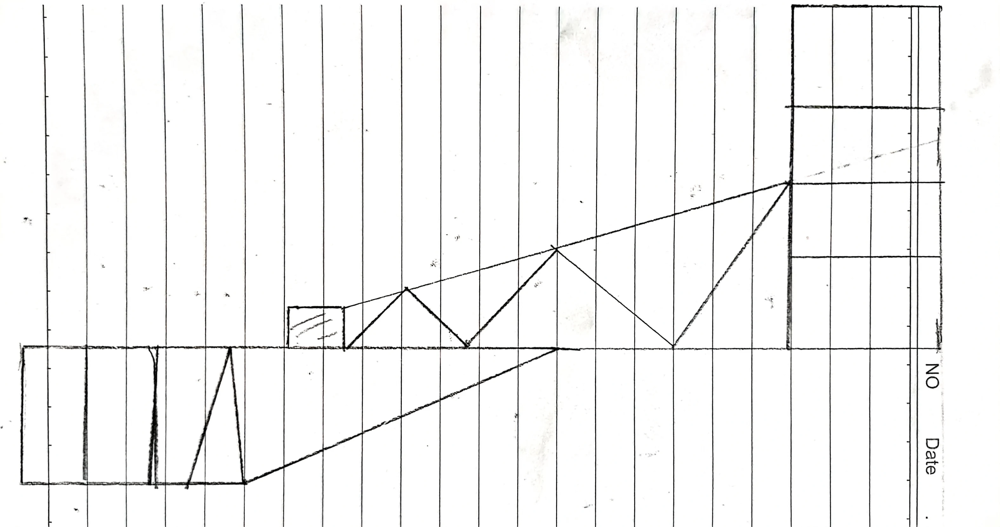

Independent architectural studies
Where triangles
become shelter.
An exploration of structure, space, and the lines that bring a house into being.
Discover the idea01 The name
Three words.
One way of thinking.
The name trpl-S grew from a simple structural sequence: Support, Stabilize, Stiffen. It is the idea behind these studies—looking at how a line can hold, steady, and shape a place to live.
Explore the studies02 Project study / 01
R-L-S
A house held in tension.
Support · Stabilize
A first elevation opens up a structural question: what if the frame itself became the character of the house? The triangle carries the eye from roof to ground, while the stair turns movement into another visible line.

The drawing began as a study of a house. It became a study of how structure can also guide movement, frame a view, and make shelter feel open.
Reading the first study03 From sketch to development
One idea,
drawn further.
Study 001 · Design development
The original right-side elevation became a coordinated two-storey house concept. These drawings extend the study into plans, elevations, and a section, making the spatial and structural relationships easier to read.
Concept design for exploration · Not for construction
Open the three-sheet drawing set


Open individual drawing sheets
04 Project study / 02
trpl-S (2)
Drawn with weight.
Stabilize · A resolved study
The second edition brings paired triangular volumes into a clearer relationship. Their weight and depth give the composition a stronger sense of balance while preserving the openness of the frame.

Each revision gives the triangle more presence. The study asks how a heavier form can feel grounded and open at the same time.
Reading the second study05 Project study / 03
trpl-S (3)
A line into a skyline.
Support · Stiffen
A long elevation turns repetition into movement. Triangular frames rise between low and vertical volumes, linking separate rooms through one continuous structural rhythm.

In the third study, the frame becomes a path for the eye. Repetition carries the house from low shelter toward a taller, more open volume.
Reading the third study06 The thread continues
Support.
Stabilize.
Stiffen.
Three words that began as the name of a project became a way to look at architecture: start with a line, ask what it holds, and follow what it makes possible.